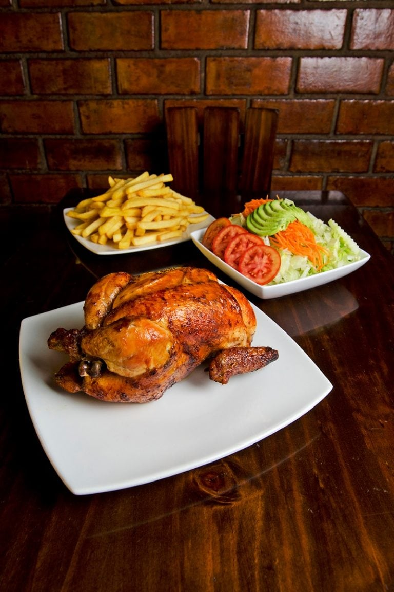

Home
Pollo a la Brasa

Description
A wildly popular dish in Peru, Pollo a la Brasa (Peruvian Rotisserie Chicken) is a marinated, crispy-skinned, roasted chicken taste explosion. Enjoy with fries and dipping sauce.
Ingredients
- 1 whole chicken (giblets removed)
- ½ cup plain vinegar
- ½ cup ground ají panca chilli pepper
- ½ cup freshly made garlic paste
- ½ cup dark soy sauce
- ½ cup vegetable oil (for the marinade)
- 11 cup black beer (such as Cusqueña Negra (optional))
- Salt, ground black pepper, and cumin to taste
- 6 large white cooking potatoes (peeled and cut into thick fries)
- 2 cups vegetable oil (to fry the potatoes)
- 1 small head iceberg lettuce (washed and roughly chopped)
- 3 medium tomatoes (sliced)
- ½ cucumber (peeled and sliced)
- ½ cup salad dressing (of your choice)
- 5 tbsp Dipping sauces (Mayonnaise, ketchup, mustard and ají chilli pepper dip to serve)
Aji Amarillo Sauce
- 1 large aji amarillo pepper (or 2 tbsps paste)
- 1/3 cup queso fresco
- 1/4 cup vegetable oil
- 1 large garlic clove
- 3 tbsp lime juice
- 1/2 tsp huacatay paste
- 1 pinch sugar
- pepper (to taste)
Steps
- On the night before roasting, add dry ground ingredients to bowl
- Combine all the ingredients for the marinade (vinegar, soy sauce, vegetable oil, black beer, ground ají panca chilli pepper, garlic, coarse salt, pepper and cumin) in a large bowl and mix well.
- Place the chicken in a large baking tray or bowl, pour the marinade over it, ensuring it covers all of the parts of the chicken, and leave in the fridge overnight to marinate.
- (Day of roasting) Take the chicken out of the fridge, spread the marinade over the chicken one last time and place into a baking pan, adding 1 inch of water to the bottom of the pan in order to avoid the chicken drying out. Pre-heat the oven at 390°F (200 °C) for 10 minutes and place the tray with the chicken in the middle of the oven. Bake for 2 hours or until cooked, ensuring the chicken is cooked inside (check with a skewer) and the skin is nicely roasted and crispy.
- About 30 minutes before the chicken is ready to come out of the oven, fry the potatoes in plenty of vegetable oil until golden brown. Place on some kitchen towel in a strainer on a plate to absorb any excess oil. Add salt to taste.
- Place the lettuce, tomato and cucumber and toss with your salad dressing of choice.
- When the chicken is ready, cut into individual pieces (usually quartered) and serve with the French fries, salad, and dipping sauces.
- Enjoy your Peruvian classic roast dinner!
Aji Amarillo Sauce
- Put all ingredients in a food processor and whizz it around for a few seconds.